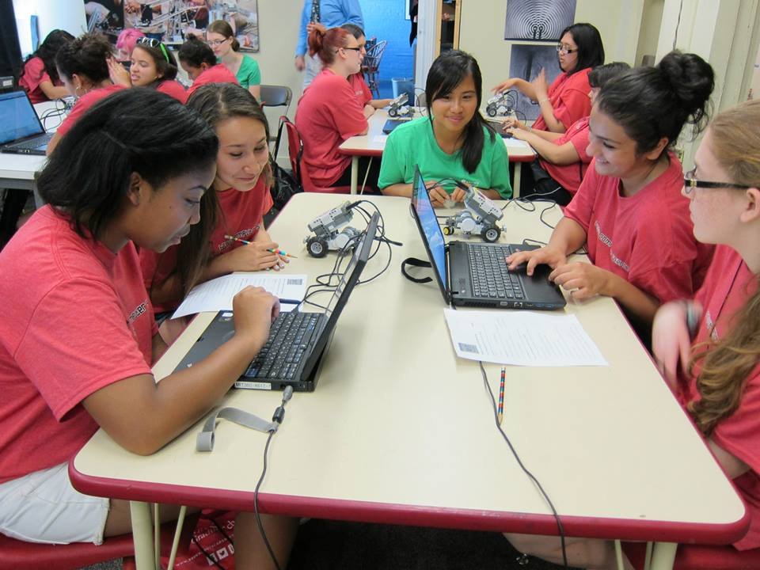

About
What is Artemis?
The Artemis Project is a free, intensive, five-week summer program for rising 9th grade girls! Two undergraduate women, Laurie Kardos and Jesse Marmon, began the program in the summer of 1996 with the goal of enhancing the self-confidence and visibility of women in the computer science community through hands-on experience with programming. Over the years, the program has also incorporated guest speakers and field trips to further the education of the attendees of the Artemis program. Today, undergraduate women from Brown University still run the program and the mission remains the same as we continue to empower young women in computer science!
Mission Statement
Our goal is to expose young women to computer science, targeting them at the critical age when the disparity between males and females in the sciences becomes most pronounced.
Logistics
The 2015 Artemis Project will take place from June 29th to July 31st in Brown University's CIT (located at 115 Waterman Street). We hold the program Monday through Friday, 9:30am- 3:00pm.
We ask that all of the girls and their families arrange transportation to the camp. Artemis will provide RIPTA bus passes to any girl who needs them for the entirety of the summer camp, free of charge! You can select this option on your application.
On field trip days, we expect every Artemis attendee to arrive no later than 7:50am as that is the time the buses will leave Brown.
Though every Artemis attendee is free to bring a lunch from home, we do have free lunch passes into Brown University’s Sharpe Refectory as well as the Verney-Woolley Dining Hall. Given advance notice, these dining services are able to cater to any dietary restrictions.
